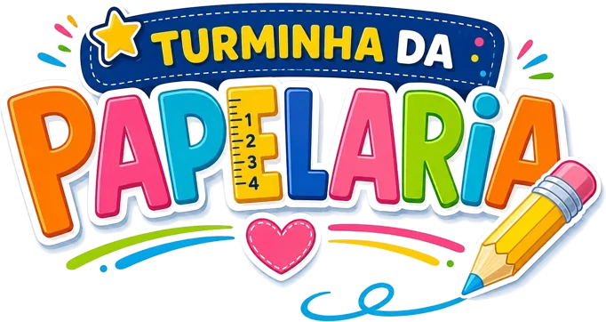
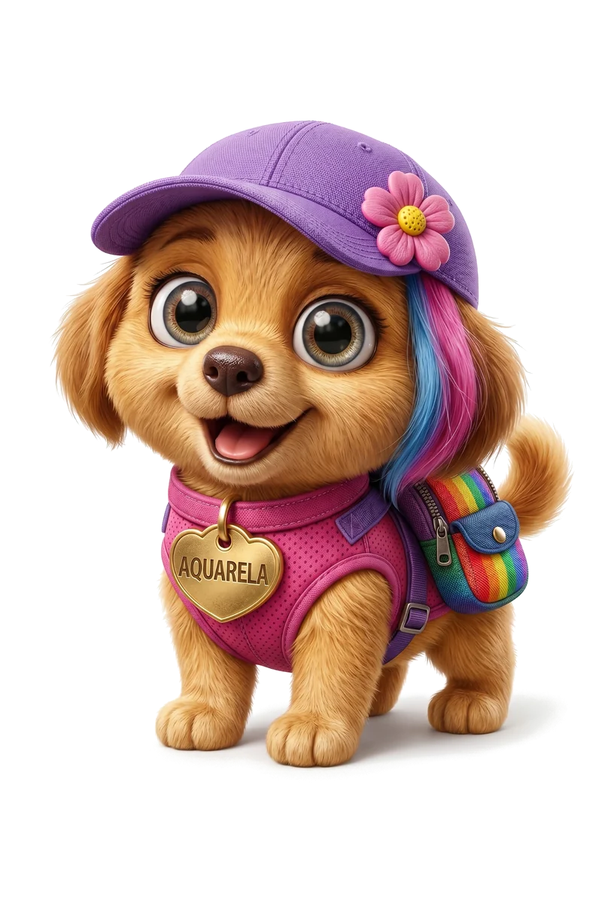
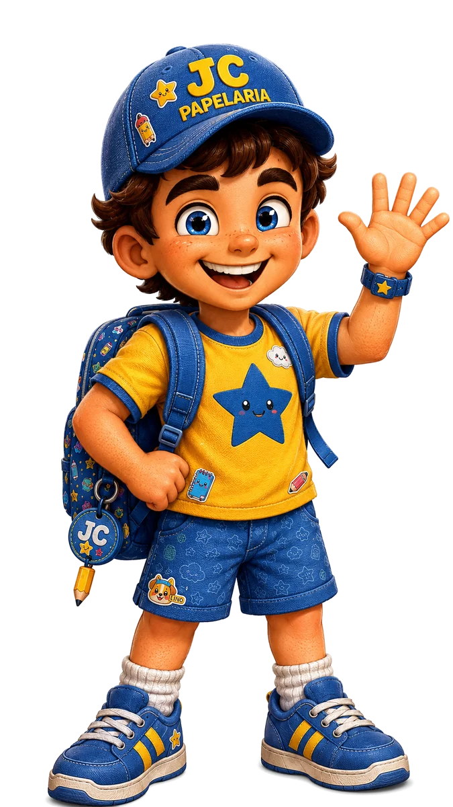
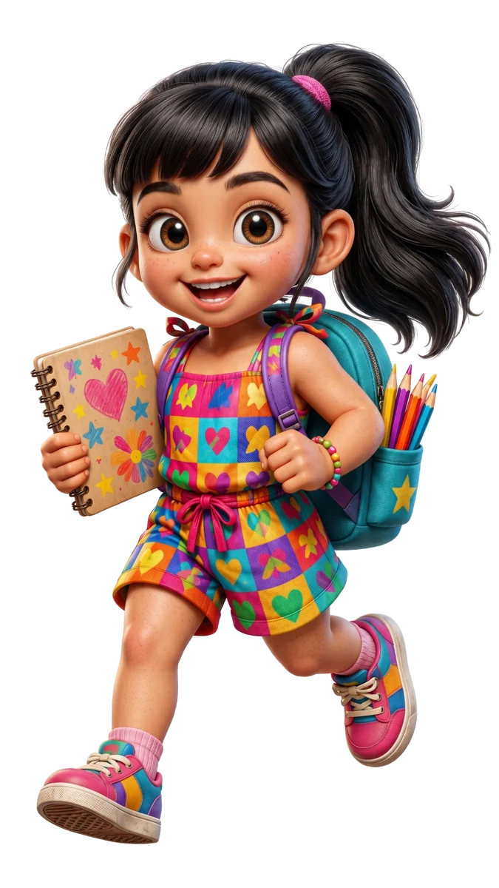
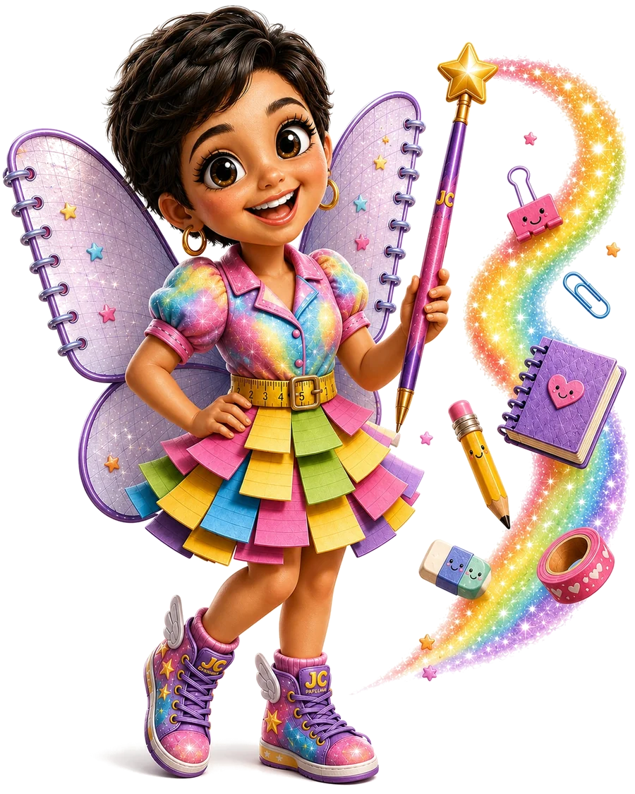
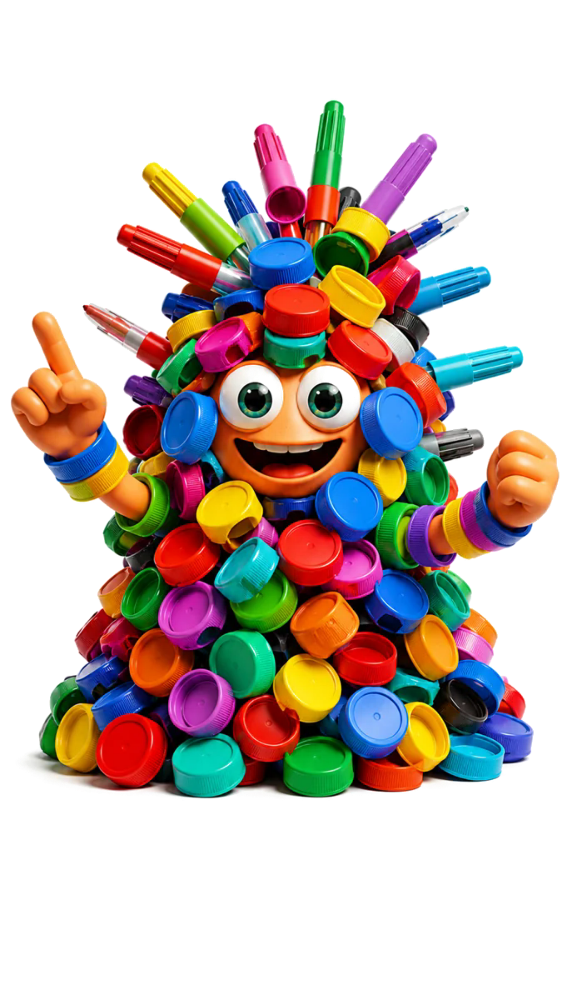
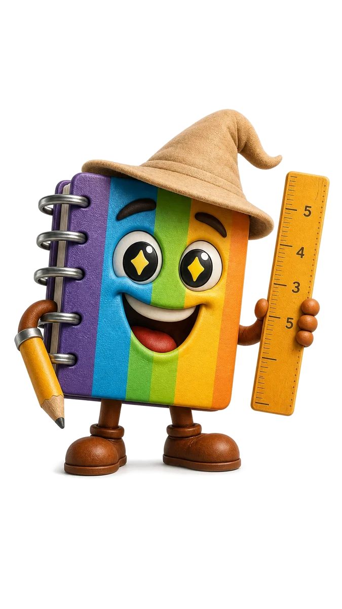
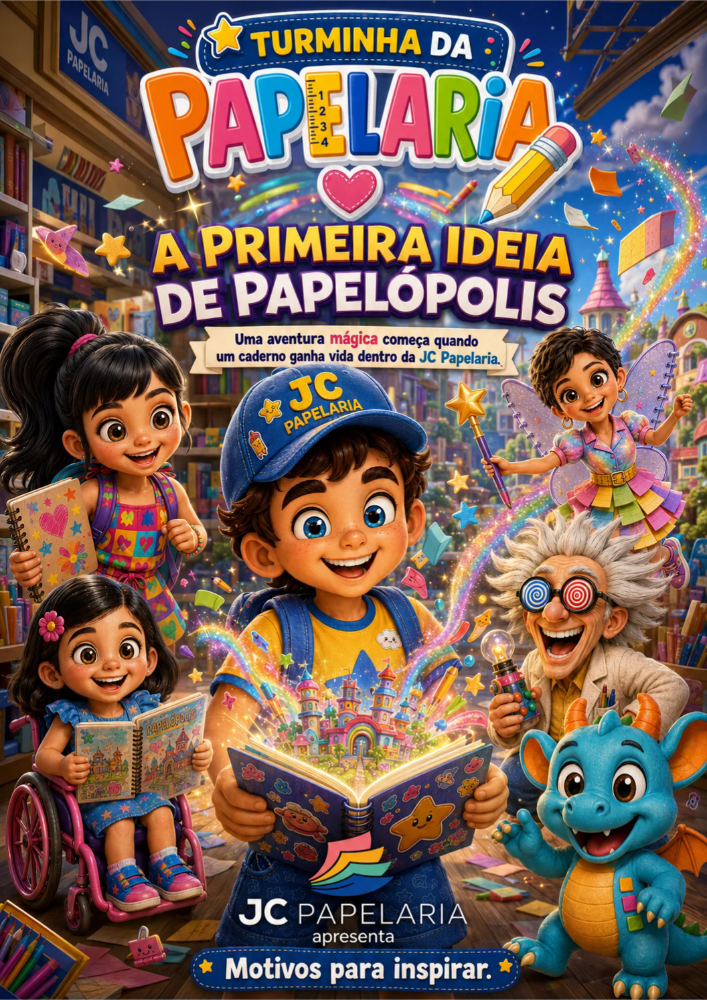

Imaginar
Toda aventura começa com uma ideia.

▶ AssistirBem-vindo a Papelópolis
Uma aventura cheia de cor, amizade e imaginação. Conheça a Turminha e descubra histórias que transformam cada página.



Um mundo feito de imaginação
Em uma cidade onde cadernos guardam segredos, lápis desenham caminhos e cada ideia pode se tornar realidade, a criatividade é o maior poder de todos.
Quem vive por aqui? →Toda aventura começa com uma ideia.
Juntos, os desafios ficam menores.
Errar também faz parte da descoberta.
As cores de cada um mudam o mundo.
Todo mundo tem um talento especial
Luz, câmera, imaginação!
Escolha uma história, prepare a pipoca e aperte o play.
Descubra como a imaginação abre as portas para o universo mágico de Papelópolis.

Uma missão em Papelópolis
Some Tampas espalhou tampinhas por toda a cidade. Encontre todas antes que o tempo acabe e recupere as cores de Papelópolis.

As tampinhas estão escondidas em Papelópolis.
Jogo 2
Combine cada personagem com seu símbolo ou material escolar. Observe bem, encontre os 8 pares e tente superar seu melhor resultado.

Encontre o símbolo ou material de cada personagem.
Jogo 3
Guie Lino por três lugares encantados. Recolha todas as ideias brilhantes, desvie das manchas de tinta e encontre o portal para a próxima fase.
Ajude Lino a encontrar as ideias e chegar ao portal.

Edição 01Histórias em quadrinhos
Uma aventura mágica começa quando um caderno ganha vida dentro da JC Papelaria. Leia a primeira história digital da Turminha.
Pegue seus lápis de cor
Escolha um desenho, imprima e dê novas cores aos personagens da Turminha.
Papelópolis sempre com você
Escolha seu lugar favorito do universo da Turminha e leve a magia para a tela do seu celular.